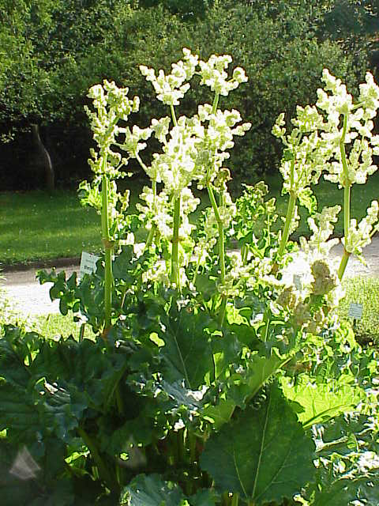
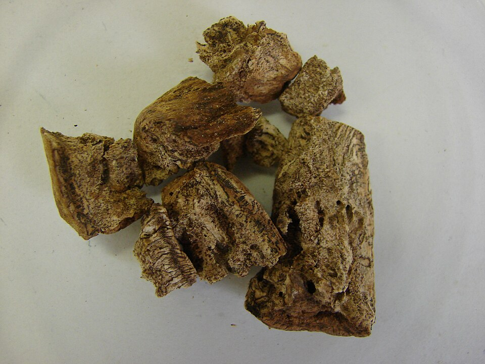

Dàhuáng · Rhubarb root and rhizome大黄
Rhei Radix et Rhizoma · Purgative herbs: drastic purgativesRhei Radix et Rhizoma · 泻下药·攻下药




- Flavour · nature性味
- bitter; cold苦，寒
- Channels归经
- Spleen, Stomach, Large Intestine, Liver, Pericardium脾、胃、大肠、肝、心包经
- Direction升降浮沉
- Bitter, cold and descending, it primarily enters the spleen, stomach and large intestine to purge the bowels and remove accumulated heat and stagnation. It also enters the liver to cool the blood and dispel stasis, and the pericardium to clear heat and drain fire. Raw rhubarb has stronger purgative action; wine-processed rhubarb is directed more towards clearing blood-level heat in the upper body, cooked rhubarb has a gentler purgative action, and charred rhubarb is used more for cooling the blood and stopping bleeding.苦寒沉降，主入脾、胃、大肠，通腑泄热、荡涤积滞；兼入肝经，凉血逐瘀；入心包经，清热泻火。生用泻下力较强，酒制后偏于清上焦血分热，熟制后泻下力缓，炭制后偏于凉血止血。
- Toxicity毒性
- Non-toxic无毒
- Dose (pharmacopoeia)用量（药典）
- 3–15 g (ceiling 15 g)（上限 15 克）
Decocted, usually added towards the end of decoction; it may also be infused with boiling water. Use an appropriate amount externally. Raw rhubarb is preferred for purgation, wine-processed rhubarb for blood circulation, and charred rhubarb for stopping bleeding. The specific dose and preparation should be selected according to the condition and professional assessment.煎服，通常后下；也可用开水泡服。外用适量。攻下宜生用，活血宜酒制，止血宜炒炭。具体剂量及炮制品选择应结合病情和医师判断。 - Pregnancy孕期
- Caution in pregnancy孕妇慎用 The 2020 Chinese Pharmacopoeia specifically advises caution during pregnancy. Because rhubarb has potent purgative action, it should not be self-administered during pregnancy. Health Canada's relevant Traditional Chinese Medicine Ingredients monograph further requires products containing rhubarb to carry a warning against use during pregnancy and breastfeeding. People who are planning pregnancy, are pregnant or are breastfeeding should disclose all herbal medicines and natural health products to their healthcare professionals.《中国药典》2020年版明确规定孕妇慎用。大黄具有较强泻下作用，妊娠期不宜自行服用；加拿大卫生部相关传统中药成分专论进一步要求含大黄的产品标注孕期及哺乳期勿用。备孕、妊娠及哺乳期间应向医务人员说明所有中药及保健品使用情况。
- Health Canada加拿大卫生部
- Health Canada: monograph加拿大卫生部：有专论 Health Canada's Natural Health Products Ingredients Database (NHPID) Traditional Chinese Medicine Ingredients monograph dated May 29, 2026 lists three botanical sources of Da Huang: Rheum officinale, Rheum palmatum and Rheum tanguticum, all identified as Da huang, Radix et Rhizoma Rhei, under Table 2 (diuretic or stimulant-laxative ingredients). The monograph requires all relevant products to state that they must not be used during pregnancy or breastfeeding; people taking prescription medicines or having a serious disease or acute infection should consult a healthcare professional before use; and users should stop use and seek medical attention if symptoms persist or worsen. The monograph also specifies that the Senna monograph applies to Rheum species. This should not be interpreted as unrestricted authorization beyond the applicable warnings. The licence conditions and label of each product must still be checked.加拿大卫生部天然健康产品数据库（NHPID）2026年5月29日的传统中药成分专论（TCMI）收录大黄的三个基原：Rheum officinale、Rheum palmatum及Rheum tanguticum，均以Da huang、Radix et Rhizoma Rhei列入表2（利尿剂或刺激性泻药成分）。该专论要求所有相关产品标注：孕期或哺乳期勿用；正在服用处方药、患有严重疾病或急性感染者，使用前咨询医务人员；症状持续或加重时停止使用并就医。该专论还规定Rheum species适用Senna monograph的风险语，不能将其理解为大黄具有独立于该风险语之外的无限制使用许可。具体产品仍须核对其许可条件和标签。
- Conservation资源与保护
- The three pharmacopoeial botanical sources of Da Huang are not among the prohibited or trade-restricted medicinal materials specified in this entry, such as rhinoceros horn, tiger bone, pangolin scales, musk or bear bile. Medicinal availability and protection of wild populations are separate issues; inclusion in the pharmacopoeia does not imply that wild harvesting is unrestricted. Procure and use material from lawful sources with authenticated botanical identity and pharmacopoeial quality.本品三个药典基原目前不属于本条目所列犀角、虎骨、穿山甲、麝香、熊胆等禁用或限制贸易药材类别。药材资源与野生种群保护应区分，不能仅凭药用大黄的药典收载推断野生采集不受限制。采购和使用应选择来源合法、基原清楚、质量符合药典标准的药材。
- Source来源
- Rheum palmatum L.; Rheum tanguticum Maxim. ex Balf.; Rheum officinale Baill.. Dried root and rhizome of Rheum palmatum, Rheum tanguticum, or Rheum officinale, family PolygonaceaeRheum palmatum L.（掌叶大黄）；Rheum tanguticum Maxim. ex Balf.（唐古特大黄）；Rheum officinale Baill.（药用大黄）。蓼科植物掌叶大黄、唐古特大黄或药用大黄的干燥根及根茎
Traditional actions and indications功效与主治（传统）
🏛 Traditional statements, not efficacy claims; the modern evidence is graded further down.以下为传统说法，不是疗效主张；现代证据见下文分级。
- Purges the bowels and attacks accumulated stagnation泻下攻积
- Clears heat and drains fire清热泻火
- Cools the blood and resolves toxins凉血解毒
- Dispels blood stasis and unblocks menstruation逐瘀通经
- Drains dampness and clears jaundice利湿退黄
Constipation due to excess heat and accumulated stagnation; vomiting blood or nosebleeds due to blood heat; red eyes and swollen throat; sores, abscesses and boils due to toxic heat; amenorrhoea from blood stasis and abdominal pain from postpartum blood stasis; traumatic injuries with blood stasis and painful swelling. Intestinal abscess with abdominal pain; damp-heat dysentery, jaundice with dark urine, painful urinary dribbling and oedema. Also used externally for burns and scalds.实热积滞便秘；血热吐血、衄血；目赤、咽肿；热毒疮疡、痈肿疔疮；瘀血经闭、产后瘀阻腹痛；跌打损伤、瘀血肿痛。肠痈腹痛；湿热痢疾，黄疸尿赤，淋证，水肿。外治烧烫伤。
How to recognise it怎么认
Growing植株 A tall perennial herb, usually reaching 1–2 metres. The root and rhizome are thick and robust, with yellow to yellow-brown internal tissue. The stem is erect, and the basal leaves are large, long-petioled and broadly ovate or palmately divided, with wavy or toothed margins; stem leaves are smaller. Large panicles appear in summer, bearing small yellowish-white or greenish flowers and winged achenes. Rheum palmatum has deeply palmately divided leaves, and Rheum tanguticum also has conspicuous palm-shaped divisions. Rheum officinale generally has broader leaves with somewhat different lobe patterns. Field identification should consider leaves, inflorescences, fruits and underground structures together rather than relying on leaf shape alone.多年生高大草本，植株通常可达1–2米。根及根茎粗壮，内部呈黄色至黄棕色。茎直立，基生叶大型，具长叶柄，叶片宽大，掌状分裂或呈宽卵形，叶缘有波状或齿状缺刻；茎生叶较小。夏季抽出大型圆锥花序，花小，黄白色或带绿色，果实为有翅的瘦果。掌叶大黄叶片掌状深裂，唐古特大黄叶片也有明显掌状分裂，药用大黄叶片通常较宽大，裂片形态有所不同。野外辨认应结合叶片、花序、果实及根茎特征，不能仅凭叶片判断药材基原。
Decoction pieces饮片 The crude drug is commonly cylindrical, conical, oval or irregularly shaped; prepared slices are round or irregular thick sections. The outer surface is yellow-brown to reddish-brown, with longitudinal wrinkles, transverse markings and whitish reticular patterns. The cut surface is pale reddish-brown to yellow-brown and granular, with conspicuous circular or radiating patterns; some slices show star-shaped anomalous vascular bundles. The material is firm and difficult to break. It has a characteristic aromatic smell and a bitter, slightly astringent taste; chewing produces a gritty sensation and slight stickiness against the teeth.药材多呈类圆柱形、圆锥形、卵圆形或不规则块状，饮片为类圆形或不规则厚片。外表面黄棕色至红棕色，可见纵皱纹、横纹及类白色网状纹理。切面呈淡红棕色至黄棕色，显颗粒性，可见明显的环状或放射状纹理，部分饮片有星点状异型维管束。质坚实，不易折断。气清香，味苦而微涩，嚼之有沙粒感并略粘牙。
Processing炮制
- Raw Da Huang生大黄：: Has stronger purgative action and is particularly used to purge accumulated stagnation, clear heat and drain fire, and cool the blood and resolve toxins.泻下作用较强，长于泻下攻积、清热泻火、凉血解毒，适用于实热积滞及血热证。
- Wine-processed Da Huang酒大黄：: Processed with wine, it has a relatively gentler purgative action and is particularly directed towards clearing blood-level heat and toxins in the upper body, including presentations involving red eyes and swollen throat.以酒炙制，泻下作用相对缓和，善清上焦血分热毒，常用于目赤、咽肿及上部血热证。
- Cooked Da Huang熟大黄：: Processed by steaming or another prescribed method, it has a gentler purgative action and is used more for draining fire and resolving toxins when excessive purgation is undesirable.经蒸制或其他规定方法炮制，泻下作用缓和，偏于泻火解毒，适用于火热毒盛而不宜峻下者。
- Charred Da Huang大黄炭：: Charring reduces its purgative action and shifts its traditional use towards cooling the blood, dispelling stasis and stopping bleeding.炒炭后泻下作用减弱，偏于凉血化瘀止血，适用于血热出血及瘀血出血证。
Cautions and incompatibilities使用注意与配伍禁忌
Da Huang is bitter, cold and strongly descending, with potent purgative action. Use cautiously in people with spleen and stomach deficiency-cold, deficiency of qi and blood, or no pattern of excess heat and accumulation. The pharmacopoeia specifically advises caution during pregnancy, menstruation and breastfeeding. Abdominal pain and diarrhoea may occur after use. Long-term or excessive use of anthraquinone-containing purgative rhubarb may cause persistent diarrhoea and electrolyte disturbances, particularly hypokalaemia. People with impaired kidney function, dehydration or frailty should be assessed by a healthcare professional. Research has identified a potential hepatotoxicity concern involving metabolites of rhein in rhubarb, but this does not establish that normal pharmacopoeial doses necessarily cause liver injury. Avoid unsupervised long-term or high-dose use.大黄苦寒沉降，峻下作用较强，脾胃虚寒、气血不足及无实热积滞者慎用。药典明确规定孕妇及月经期、哺乳期慎用。服用后可能出现腹痛、腹泻等胃肠道反应；长期或过量使用泻下类大黄可能造成持续腹泻及电解质紊乱，尤其应注意低钾风险。肾功能异常、脱水、老年体弱者应由专业医务人员评估。大黄含蒽醌类成分，已有关于大黄中大黄酸代谢产物潜在肝毒性风险的研究，但不能据此认定常规药典剂量必然导致肝损伤。避免自行长期或大剂量使用。
Interactions with medicines与西药的相互作用
The permitted sources reviewed here do not establish a specific clinically confirmed interaction between Da Huang and any particular Western medicine. The pharmacopoeia and the materia medica textbook do not list specific Western drug interactions for this herb, and the retrieved review and human-study abstracts are insufficient to establish a clinically actionable interaction. Therefore, unverified interactions with warfarin, anticoagulants, antihypertensives or other medicines are not listed. Because prolonged or excessive use may cause diarrhoea and electrolyte disturbances, people taking prescription medicines or living with underlying conditions should consult a healthcare professional before use.本次限定来源中，没有足以确认大黄与某一种具体西药存在临床相互作用的专门证据。药典及规划教材的本味条目没有列出具体西药相互作用；本次检索到的综述和人体研究摘要也不足以建立可直接用于临床的具体相互作用结论。因此不列举未经证实的华法林、抗凝药、降压药或其他西药相互作用。大黄长期或过量使用可能引起腹泻及电解质紊乱，正在服用处方药或有基础疾病者应先咨询医务人员。
Modern research, graded现代研究（分级）
- E1 A 2018 human meta-analysis of randomized controlled trials examined the addition of a rhubarb-containing proprietary preparation (CPM-Rheum) to ACEI or ARB treatment in patients with chronic renal failure. Its abstract reports significant reductions in serum creatinine (SCr) and blood urea nitrogen (BUN), particularly with long-term administration. The intervention was a rhubarb-containing proprietary preparation combined with Western medicines, not single-herb Da Huang slices; the findings cannot be directly extrapolated to the clinical efficacy or safe dosage of the single herb.2018年一项人体随机对照试验荟萃分析研究了慢性肾功能衰竭患者在ACEI或ARB基础治疗上加用含大黄制剂（CPM-Rheum）的情况。摘要结论报告，联合使用后血清肌酐（SCr）和血尿素氮（BUN）均显著降低，长期使用时这一结果更明显。研究对象为含大黄制剂联合西药，而非单味大黄饮片；不能直接据此推导单味大黄的临床疗效或安全剂量。
- E1 A 2012 Cochrane systematic review evaluated Rheum officinale for chronic kidney disease. It reported no apparent association with serious adverse events in the available studies, but concluded that there was insufficient evidence to support a recommendation for its use. This conclusion concerns the evidence for chronic kidney disease and does not establish the safety of rhubarb for other indications or during long-term use.2012年Cochrane系统综述评估了药用大黄（Rheum officinale）用于慢性肾病的研究。综述指出，现有研究中未显示其与严重不良事件存在明确关联，但目前没有足够证据支持推荐使用。该结论针对慢性肾病研究证据，不代表大黄在其他适应证或长期使用情况下已经证实安全。
- E4 A 2020 in-vitro liver microsome study examined how rhein and its metabolites from rhubarb inhibit UGT1A1, a bilirubin-metabolising enzyme, as a measure of possible liver toxicity. The phase I metabolite hydroxy-rhein and its tautomers carried the higher risk; rhein itself and its glucoside, glucuronide and sulfate conjugates carried less. This is laboratory work and does not show that taking rhubarb causes clinical liver injury.2020 年一项体外肝微粒体研究考察大黄中大黄酸及其代谢产物对 UGT1A1（胆红素代谢酶）的抑制，用以评估潜在肝毒性风险：Ⅰ相代谢产物羟基大黄酸及其互变异构体风险较高，大黄酸原型及其葡萄糖苷、葡萄糖醛酸结合物和硫酸结合物风险较小。这是实验室研究，不能直接等同于服用大黄饮片后发生临床肝损伤。
- E1 A 2017 meta-analysis of randomised trials examined Rheum palmatum added to routine comprehensive care for acute respiratory distress syndrome. Its abstract concludes that, compared with routine care alone, adding rhubarb lowered mortality, shortened mechanical ventilation and improved blood gases, cytokine levels and adverse effects. This was adjunct use in intensive care, not a basis for taking rhubarb on one's own.2017 年一项随机对照试验荟萃分析考察掌叶大黄（Rheum palmatum L.）加常规综合治疗用于急性呼吸窘迫综合征。摘要结论称，与单用常规综合治疗相比，加用大黄后死亡率下降、机械通气时间缩短，血气、细胞因子水平与不良反应也有改善。纳入试验多在中国开展，是重症监护中的辅助用法，不是自行服用大黄的依据。
In the classics古籍原文
「大黃味苦寒有毒。主下瘀血，血閉，寒熱，破癥瘕積聚，留飲宿食，蕩滌腸胃，推陳致新，通利水穀，調中化食，安和五臟。生山谷。」——神农本草经
Shennong Bencao Jing (Divine Farmer's Materia Medica)
The Shennong Bencao Jing describes Da Huang as bitter and cold, records it as toxic, and lists uses involving blood stasis, amenorrhoea, abdominal masses, accumulated stagnation and retained food. The phrase 'cleanses the intestines and stomach and removes the old to bring forth the new' summarizes its traditional role in purging accumulation and clearing intestinal heat. The historical toxicity description and modern pharmacopoeial evaluation belong to different contexts; clinical use should follow current pharmacopoeial standards.《神农本草经》记载大黄味苦、性寒，并记为有毒，主治下瘀血、血闭、癥瘕积聚、留饮宿食等。原文「蕩滌腸胃，推陳致新」概括了大黄攻下积滞、通腑泄热的传统特点。古籍中的毒性记载与现代药典的规范用药评价属于不同历史语境，临床使用应以现行药典规定为准。
Where it is used: the web串联：它在哪些方里、连到哪里
Classical formulas (Shanghan, Jingui)经方（伤寒、金匮）
| Formula方 | Role角色 | Dose: original / today剂量：原书／今用 | Partners in the formula同方配伍 |
|---|---|---|---|
| Major Order the Qi Decoction大承气汤 | Monarch君 | original text: see the Chinese original四兩（酒洗） | Hou Po (magnolia bark)厚朴 · Zhǐshí (Immature bitter orange)枳实 · Mang Xiao (mirabilite, sodium sulfate decahydrate)芒硝 |
| Rhubarb and Coptis Heart-Draining Decoction大黄黄连泻心汤 | Monarch君 | original text: see the Chinese original二两 | Huang Lian (coptis rhizome)黄连 |
| Rhubarb and Moutan Decoction大黄牡丹汤 | Monarch君 | original text: see the Chinese original四两 | Mǔdānpí (Moutan Bark)牡丹皮 · Tao Ren (peach kernel)桃仁 · Dong Gua Zi (winter melon seed)冬瓜子 · Mang Xiao (mirabilite)芒硝 |
| Peach Kernel Qi-Ordering Decoction桃核承气汤 | Monarch君 | original text: see the Chinese original四两 | Tao Ren (peach kernel)桃仁 · Guìzhī (Cassia twig)桂枝 · Mang Xiao (mirabilite)芒硝 · Gāncǎo (Licorice root)甘草 |
| Regulate the Stomach and Order the Qi Decoction调胃承气汤 | Monarch君 | original text: see the Chinese original四两（去皮，清酒洗） | Mang Xiao (mirabilite)芒硝 · Gāncǎo (Licorice root)甘草 |
| Minor Order the Qi Decoction小承气汤 | Monarch君 | original text: see the Chinese original四两（酒洗） | Hou Po (magnolia bark)厚朴 · Zhǐshí (Immature bitter orange)枳实 |
| Major Bupleurum Decoction大柴胡汤 | Minister臣 | original text: see the Chinese original一方，加大黃二兩 | Cháihú (Bupleurum root)柴胡 · Huángqín (Baikal skullcap root)黄芩 · Báisháo (White peony root)白芍 · Bànxià (Pinellia tuber)半夏 · Shēng Jiāng (Fresh ginger rhizome)生姜 · Zhǐshí (Immature bitter orange)枳实 · Dà Zǎo (Jujube fruit)大枣 |
| Major Sinking-into-the-Chest Decoction大陷胸汤 | Minister臣 | original text: see the Chinese original六两（去皮） | Gan Sui (kansui root)甘遂 · Mang Xiao (mirabilite)芒硝 |
| Decocted Turtle Shell Pill鳖甲煎丸 | Assistant佐 | original text: see the Chinese original三分 | Bie Jia (soft-shelled turtle carapace)鳖甲 · She Gan (belamcanda rhizome)射干 · Huángqín (Baikal skullcap root)黄芩 · Cháihú (Bupleurum root)柴胡 · Shu Fu (woodlouse)鼠妇 · Gānjiāng (Dried ginger)干姜 · Báisháo (White peony root)白芍 · Guìzhī (Cassia twig)桂枝 · Ting Li Zi (pepperweed seed)葶苈子 · Shi Wei (pyrrosia leaf)石韦 · Hou Po (magnolia bark)厚朴 · Mǔdānpí (Moutan Bark)牡丹皮 · Qu Mai (dianthus herb)瞿麦 · Ling Xiao Hua (campsis flower)凌霄花 · Bànxià (Pinellia tuber)半夏 · Rénshēn (Ginseng (Asian))人参 · Tu Bie Chong (ground beetle)土鳖虫 · E Jiao (ass-hide gelatin)阿胶 · Lu Feng Fang (wasp nest)露蜂房 · Chi Xiao (a form of saltpetre)赤硝 · Qiang Lang (dung beetle)蜣螂 · Tao Ren (peach kernel)桃仁 |
| Bupleurum plus Dragon Bone and Oyster Shell Decoction柴胡加龙骨牡蛎汤 | Assistant佐 | original text: see the Chinese original二两 | Cháihú (Bupleurum root)柴胡 · Long Gu (fossil bone)龙骨 · Mu Li (oyster shell)牡蛎 · Huángqín (Baikal skullcap root)黄芩 · Bànxià (Pinellia tuber)半夏 · Sheng Jiang (fresh ginger)生姜 · Rénshēn (Ginseng (Asian))人参 · Fúlíng (Poria)茯苓 · Guìzhī (Cassia twig)桂枝 · Qian Dan (red lead oxide)铅丹 · Da Zao (jujube)大枣 |
| Resistance Decoction抵当汤 | Assistant佐 | original text: see the Chinese original三两（酒洗） | Shui Zhi (leech)水蛭 · Meng Chong (gadfly)虻虫 · Tao Ren (peach kernel)桃仁 |
| Hemp Seed Pill麻子仁丸 | Assistant佐 | original text: see the Chinese original一斤（去皮） | Huo Ma Ren (hemp seed)火麻仁 · Kǔ Xìng Rén (Bitter Apricot Seed)苦杏仁 · Báisháo (White peony root)白芍 · Zhǐshí (Immature bitter orange)枳实 · Hou Po (magnolia bark)厚朴 |
| Artemisia Capillaris Decoction茵陈蒿汤 | Assistant佐 | original text: see the Chinese original二两（去皮） | Yin Chen (capillary wormwood)茵陈 · Zhi Zi (gardenia fruit)栀子 |
Later formulas (Song to Qing)时方（宋元明清）
| Formula方 | Role角色 | Dose: original / today剂量：原书／今用 | Partners in the formula同方配伍 |
|---|---|---|---|
| Saposhnikovia Sage-Inspired Powder防风通圣散 | Minister臣 | original text: see the Chinese original五钱（酒蒸） | Fángfēng (Saposhnikovia root)防风 · Máhuáng (Ephedra herb)麻黄 · Jing Jie (schizonepeta)荆芥 · Bòhe (Chinese mint)薄荷 · Mang Xiao (mirabilite)芒硝 · Shígāo (Gypsum)石膏 · Huángqín (Baikal skullcap root)黄芩 · Lian Qiao (forsythia fruit)连翘 · Zhi Zi (gardenia fruit)栀子 · Hua Shi (talc)滑石 · Jie Geng (platycodon root)桔梗 · Chuan Xiong (Sichuan lovage rhizome)川芎 · Dāngguī (Chinese Angelica Root)当归 · Báisháo (White peony root)白芍 · Bai Zhu (white atractylodes)白术 · Gāncǎo (Licorice root)甘草 · Sheng Jiang (fresh ginger)生姜 · Cong Bai (scallion white)葱白 |
| Peony Decoction芍药汤 | Assistant佐 | original text: see the Chinese original三錢 | Báisháo (White peony root)白芍 · Dāngguī (Chinese Angelica Root)当归 · Huángqín (Baikal skullcap root)黄芩 · Coptis rhizome (Coptidis Rhizoma)黄连 · Mùxiāng (Costus Root)木香 · Areca seed (Arecae Semen)槟榔 · Cinnamon bark (Cinnamomi Cortex)肉桂 · Gāncǎo (Licorice root)甘草 |
Folk and single-herb remedies偏方、验方、单方
| Formula方 | Use用法 | Self-use能否自用 |
|---|---|---|
| Rhubarb powder mixed with water for chilblains大黄末水调涂冻疮 | External use外用 | Literature record only: not advised for self-use仅作文献记录，不建议自行使用 |
| Swelling-Drawing Powder (honeysuckle vine and leaf paste for early local swellings)敷肿拔毒方（金银藤叶调敷肿毒初发） | External use外用 | See a doctor first先看医生再说 |
Patterns reached through these formulas经由这些方连到的证
Exam notes (HER)考点（HER）
HER essentials: (1) Da Huang is a drastic purgative within the purgative category and is bitter, cold and descending; (2) it enters the spleen, stomach, large intestine, liver and pericardium channels; (3) its four principal actions are purging accumulated stagnation, clearing heat and draining fire, cooling the blood and resolving toxins, and dispelling blood stasis to unblock menstruation; (4) raw rhubarb has stronger purgative action, wine-processed rhubarb is directed towards upper-body blood-level heat, cooked rhubarb has a gentler purgative action, and charred rhubarb is used more for cooling the blood and stopping bleeding; (5) the usual pharmacopoeial oral dose is 3–15 g, generally added towards the end of decoction; (6) caution is required during pregnancy, menstruation and breastfeeding; (7) Health Canada's TCMI lists the three botanical sources under Table 2 as diuretic or stimulant-laxative ingredients and requires pregnancy and breastfeeding warnings; (8) Da Huang is traditionally combined with Mang Xiao in formulas such as Da Cheng Qi Tang and should not be mistakenly classified as an eighteen- or nineteen-incompatibility pairing.HER重点：①大黄属于泻下药中的攻下药，苦寒沉降；②五经归属为脾、胃、大肠、肝、心包；③四项核心功效为泻下攻积、清热泻火、凉血解毒、逐瘀通经；④生大黄泻下力较强，酒大黄偏清上焦血分热毒，熟大黄泻下力缓，大黄炭偏凉血化瘀止血；⑤药典常规内服量3–15g，通常后下；⑥孕妇、月经期及哺乳期慎用；⑦加拿大卫生部TCMI将三个大黄基原列入表2利尿剂或刺激性泻药成分，并要求孕期及哺乳期勿用；⑧大黄与芒硝常见于大承气汤等经典配伍，不应误记为十八反或十九畏禁忌。
Sources依据
- Chinese Pharmacopoeia Commission. Pharmacopoeia of the People's Republic of China, 2020 edition, vol. I国家药典委员会《中华人民共和国药典》2020 年版一部
- Zhong Gansheng (ed.). Chinese Materia Medica (national TCM higher-education textbook series)钟赣生主编《中药学》（全国中医药行业高等教育规划教材）
- Health Canada, NHPID monograph: Traditional Chinese Medicine Ingredients (TCMI), May 29, 2026 ↗
- Yang et al. THE USE OF RHEUM PALMATUM L. IN THE TREATMENT OF ACUTE RESPIRATORY DISTRESS SYNDROME: A META-ANALYSIS OF RANDOMIZED, CONTROLLED TRIALS. Afr J Tradit Complement Altern Med. 2017 ↗
- Yang et al. Effects of adding Rheum officinale to angiotensin-converting enzyme inhibitors or angiotensin receptor blockers on renal function in patients with chronic renal failure: A meta-analysis of randomized controlled trials . Clin Nephrol. 2018 ↗
- Wang et al. Rheum officinale (a traditional Chinese medicine) for chronic kidney disease. Cochrane Database Syst Rev. 2012 ↗
- Wang et al. [Study on potential hepatotoxicity of rhein in Rhei Radix et Rhizoma based on liver metabolism]. Zhongguo Zhong Yao Za Zhi. 2020 ↗